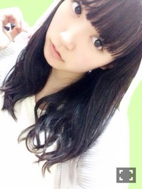
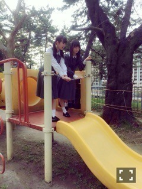
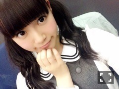
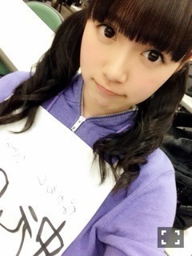
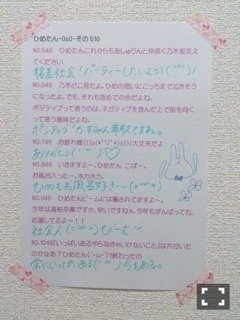
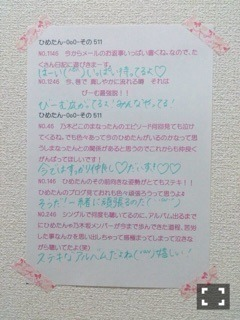

| 2015/03 29 Sun | ひめたん-OoO-その531 |

さて、発売中の月刊B.L.T.に
かなりんとふたりで載ってます！
なんだかレイアウトを見ただけで
涙出そうになっちゃったよ～
写真も良い雰囲気でステキな1P。
他にも乃木坂ちゃん載ってるから
良かったら見てみてね( ˇωˇ )

そして明日発売の月刊エンタメでは
ちーちゃんとペアグラビアを
撮っていただきました！
オフショットは次回☆
さらに、スペースシャワーTVプラスの
収録をしてきました！
「乃木坂46スペシャル」ということで
桜井・若月・新内・中元の4人で
いろんなことを語ってきましたよ
4/16オンエアです
よろしくお願いします(^o^)
告知はここまで
これからイベントの報告をしなくては。
まず、昨日は富士急ハイランドにて
「乃木坂46のの」の公開収録を
してきました！
大好きな乃木のの。
ひめはいつもワクワクして
収録に臨むんだけど
昨日はちょっと緊張したなあ～
今回は陽菜ちゃんとふたりで
MCを務めさせていただきました
歴代MCコンビ♡
スタッフさんに
このふたり良いねって
言ってもらえたから
チームワークの良さは
オンエアでチェックしてね。
そしてミニライブもありました！
11thアンダーになってから
はじめてのイベントだから
このリハやってて、なんとなく
今回のアンダーライブは
こんな感じになるのかなと
雰囲気を掴んだ気がする、なんとなく。
何より嬉しかったのは
たくさんの方が来てくださったこと！
思ったよりも暑くて
しかも土曜日でお花見日和なのに
桜よりも私たちのライブに
来てくださったのが嬉しかった♡
富士山には雪がまだ積もっているのに
会場はものすごく熱くて
なんだか不思議な気持ち（＾ω＾）
ありがとうございました！
夜桜は見たのかな～？
昨日の公開収録のオンエアは
文化放送だと4月5日になります
詳しくは乃木のの公式サイトや
運営さんブログで
確認してみてください～


そして今日は
舞台「じょしらく」の
公開オーディションでした。
はわ～緊張した～
来てくださったみなさんは
いつもと違う私たちを
見ていただけたんではないでしょうか
私は 防波亭手寅ちゃん役に
キャスティングしていただきました！
舞台経験がほとんどなくて
お芝居もまだまだな私ですが
選ばれたからには頑張ります☆
この舞台を通して
また新たな私を発見できたら
いいなと思うとワクワクする（＾ω＾）
みなさんぜひ
観に来てくださいねっ

さあ、今夜の乃木どこは
中3組の休日( ˇωˇ )～♪
スタジオでVTR見てて
ああ～普段こんな感じなんだなって。
3人の役回りとか、私服とか、
プライベートな顔を
見ていただけると思います！
何気にテレビではあまり
見せたことのない3ショットなので
みなさんの反応が楽しみだな～
私たち一見タイプが違うので
同い年とはいえこの3人が仲良いの
不思議だねなんてよく言われるけれど
見たらなんとなくわかると思う♡
お楽しみに～

最近このおくちしちゃう
ちょいプク。
乃木坂46カフェオープン♡
もう行った方もいるのかな～？
店内の柱にひめもサインしてるよ
おすすめはタピオカミルクティー！
美味しかった～(´｡･v･｡｀)

 ひめたんはブタの貯金箱とか
ひめたんはブタの貯金箱とか
可愛い貯金箱持ってますか？
今は持ってないな～
ちっちゃい頃はポムポムプリンちゃんの
缶カン使ってました(＊^v^＊)
あーピューロランド行きたい......
ひめたんも落ち着いたら、
どっか旅行でも行ったら？
ひめたんが行きたい所はどこですか？
そいえばさゆちゃんに庭園誘われた♡
万理華と3人で、お仕事落ち着いたら
北陸新幹線乗って行くんだ♡
ひめたんはUSJ
行ったことあるかな？
小さい頃に一度だけ。
ユニバ楽しいっていろんなとこで
聞くからまたいつか行きたいなぁ
どんな本を読んでるんだろう⁇
自分も本が好きだから是非共有したい！
ひめの好きなジャンルは
一般文芸っていうらしい。
自伝を読むのも好き。
自己啓発本にも惹かれる。かな！
握手会に女性一人で行くのって
浮いちゃうかな？
そもそも同性のファンって嬉しいのー？
もちろーん！
おにゃのこトークしよ(´,,•ω•,,｀)
会場でおともだちもできるよきっと♡
ひめたんの日記の
コメント欄下２ケタに46を踏んだ方へ
手書きでコメ返するコーナー
＼ ひめたん46 ／



いつもたくさんのコメント
ありがとうございます
もう3月が終わるのね早いよ～
行く・逃げる・去る は
ほんとだったでしょ( >_< )
卒業旅行エピソード
教えてくれてありがとう！
行ってない人が意外と多くて
ひめの周りだけ？
それともここ数年のことなのかしら？
今年は卒業旅行とか行けなかったけど
いつかメンバーと旅行行きたい♡
新幹線か電車で、
景色を眺めながら
遠くに行ってみたいな(＊'v`＊)
(＊´・ω・＊)
コメント(1057)
2015/03/29 23:42